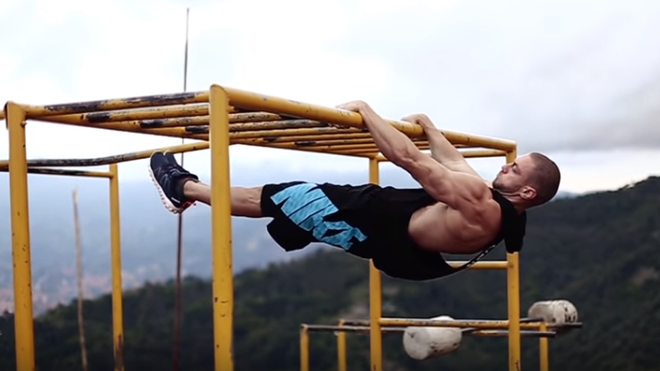

La calistenia es un sistema de ejercicios físicos con el propio peso corporal. En este sistema, el interés está en los movimientos de las cadenas musculares que componen nuestro cuerpo. La palabra proviene del griego kalos (belleza) y sthenos (fortaleza). El objetivo es la adquisición de fuerza y belleza en el ejercicio. Es la belleza que tiene el cuerpo en movimiento. Además de ser una disciplina de entrenamiento que con el paso del tiempo está ganando mucha popularidad en el mundo del fitness ahora se está considerando como deporte. Los ejercicios realizados en calistenia se dividen en básicos (ejercicios comunes para el fortalecimiento de los músculos), estáticos (ejercicios avanzados que consisten en mantener una misma posición por algún periodo de tiempo, estos requieren mucha fuerza muscular y en tendones) y dinámicos (ejercicios avanzados que consisten en el movimiento, se utilizan en "freestyle", aparte de fuerza requieren gran agilidad y reflejos).
Calistenia.
